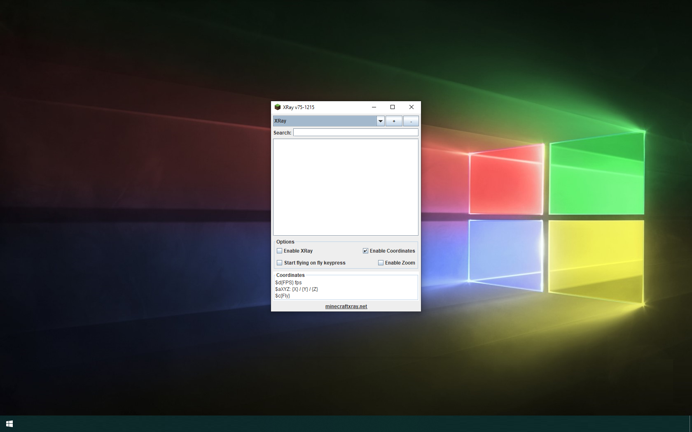
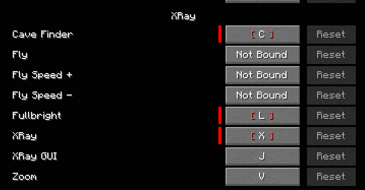

ERA 3 Suite Moderna: MisterBartra
La suite MB representa la culminación moderna del proyecto Minecraft X-Ray para versiones 1.21.6+, concebida y desarrollada por MisterBartra.
Innovaciones Exclusivas de la Suite MB
- Mitigación del Ticking Masivo F3 + A: El cliente original de AO continuaba emitiendo señales en estado
KeyStayal mantener la tecla de perfil, forzando re-tickeos continuos similares a recargar chunks reiteradamente. La suite MB introduce un filtro KeyDown por flanco que procesa exclusivamente un único evento por pulsación. - Fullbright Persistente por Shader
(Lcam;F)Fen Tecla R: Iluminación impecable en terreno y entidades sin alterar el balance de color de las texturas y con persistencia íntegra a través de perfiles. - Sanitización de Teclas GLFW a -1: Elimina las colisiones
key.keyboard.0y los marcos de error rojos en los Controles de Minecraft. - Protección contra Daño de Caída: Vuelo ergonómico con doble pulsación e intercepción de caída al suelo (
fallDistance = 0.0). - Detección en Registros Vivos: Soporte nativo para
BuiltInRegistries.BLOCKy consultas en tiempo real de inventarios y spawners. - Persistencia JSON Bidireccional: Serialización estructurada en
xray.jsoncon compatibilidad con el históricoxray.properties.
Evidencia Visual de la Suite MB (Minecraft 1.21.6+)
Demostración real del entorno moderno de la suite MB:
1. Interfaz Swing Moderna con Búsqueda Dinámica de Bloques:


2. Controles de Minecraft Sanitizados con Estándar GLFW (-1):

